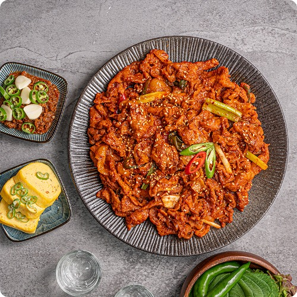

제육볶음은 돼지고기에 고추장 기반으로 만든 양념장을 넣고 볶아서 만든 음식이다.

| 1 | 돼지고기는 먹기 좋은 크기로 자르고, 양파와 깻잎은 채를 썰어주고, 대파와 청양고추, 홍고추는 어슷하게 썰어준다. |
| 2 | 볼에 양념재료를 넣어 섞은 후, 돼지고기를 넣고 주물러서 먼저 양념하고 양파와 대파를 더해 섞어 20분 정도 양념장에 재워준다. |
| 3 | 팬에 약간의 기름을 두르고 양념한 돼지고기와 야채를 넣고 볶아주고, 돼지고기가 익으면 청양고추, 홍고추, 참기름을 넣어 살짝 볶고 불을 끈다. |
| 4 | 채썬 깻잎과 깨를 뿌려 제육볶음을 완성한다. |